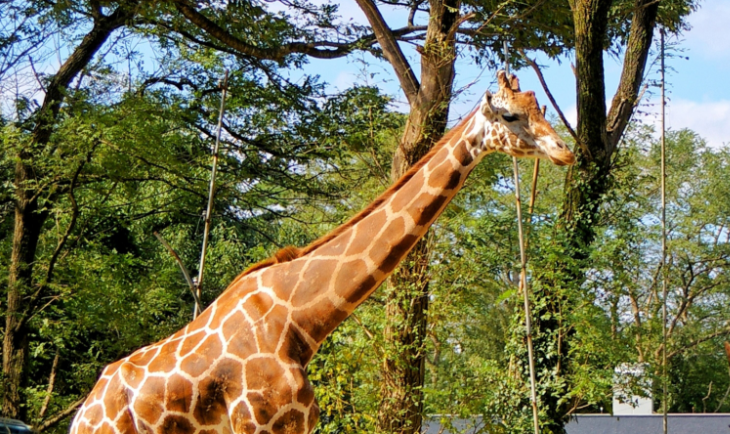
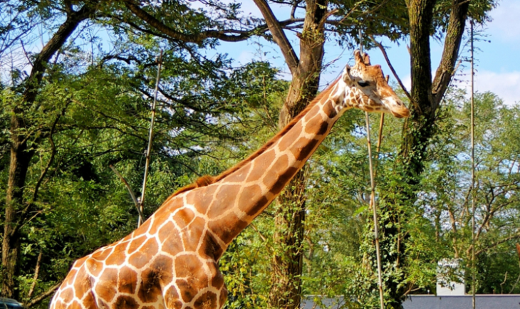

キリン

キリン は、哺乳綱偶蹄目（鯨偶蹄目とする説もあり）キリン科キリン属に分類される偶蹄類。角先端までの高さオス4.7-5.3メートル、メス3.9-4.5メートル。体重オス800-1,930キログラム、メス550-1,180キログラム。体色は橙褐色や赤褐色・黒と、淡黄色からなる斑紋が入り、この斑紋は個体変異がある。頭部の骨化はオスで顕著で、頭骨の重量がメス（4.5キログラム）の約3倍の15キログラムに達することもある。

キリン は、哺乳綱偶蹄目（鯨偶蹄目とする説もあり）キリン科キリン属に分類される偶蹄類。角先端までの高さオス4.7-5.3メートル、メス3.9-4.5メートル。体重オス800-1,930キログラム、メス550-1,180キログラム。体色は橙褐色や赤褐色・黒と、淡黄色からなる斑紋が入り、この斑紋は個体変異がある。頭部の骨化はオスで顕著で、頭骨の重量がメス（4.5キログラム）の約3倍の15キログラムに達することもある。